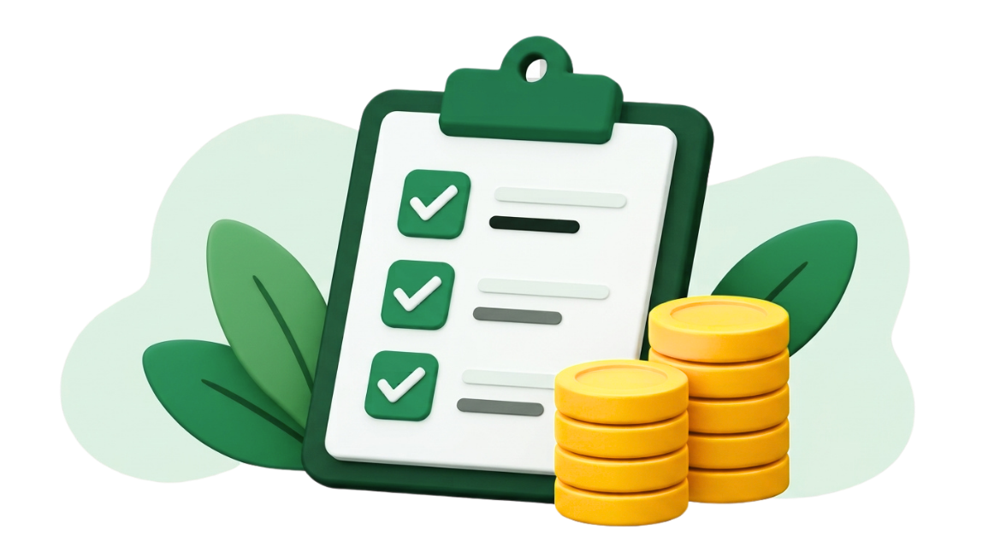
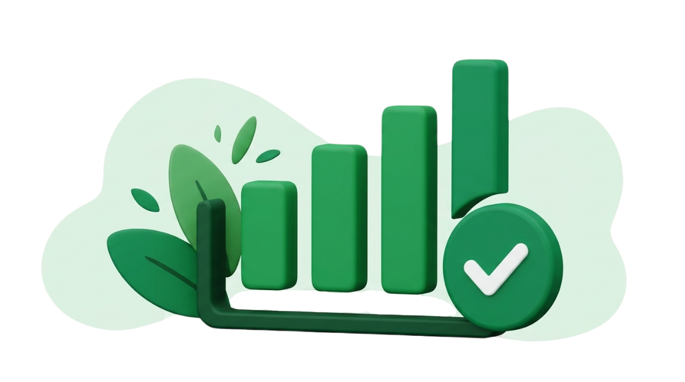
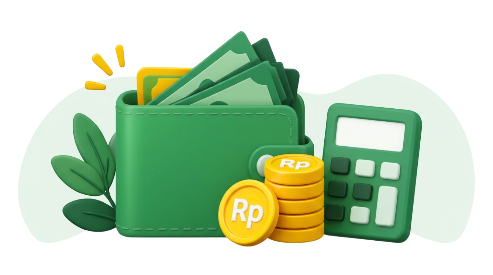
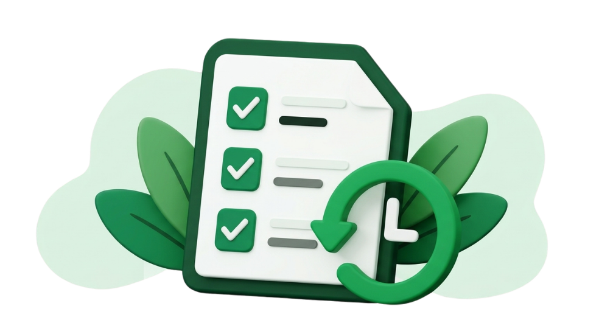

Dana cadangan
Rp0
Rp
SELAMAT DATANG KEMBALI
Atur kebutuhanmu hari ini dengan lebih terencana.
RINGKASAN
Masukkan dana untuk melihat ringkasan alokasi.
ALUR PENGGUNAAN
Masukkan dana yang tersedia, tentukan dana cadangan, lalu pilih kebutuhan yang ingin dianalisis.

Pilih satu atau lebih kebutuhan yang sesuai dengan kondisi keuanganmu.
Beri skor 1–5 pada tiap kriteria sesuai kondisi Anda.
| Kebutuhan | C1Penting | C2Dampak | C3Waktu | C4Kewajiban |
|---|
Nilai preferensi dan urutan prioritas setiap kebutuhan.

| # | Kebutuhan | Nilai |
|---|---|---|
| Belum ada hasil. Hitung prioritas di Tahap 2. | ||
Pembagian dana berdasarkan hasil prioritas SAW.

Belum ada hasil. Hitung prioritas di Tahap 2.
| # | Kebutuhan | Persentase | Alokasi Dana |
|---|---|---|---|
| Belum ada hasil. Hitung prioritas di Tahap 2. | |||
Kesimpulan: hasil alokasi akan tampil setelah prioritas dihitung.
Daftar dan ringkasan analisis yang telah Anda simpan.
